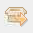
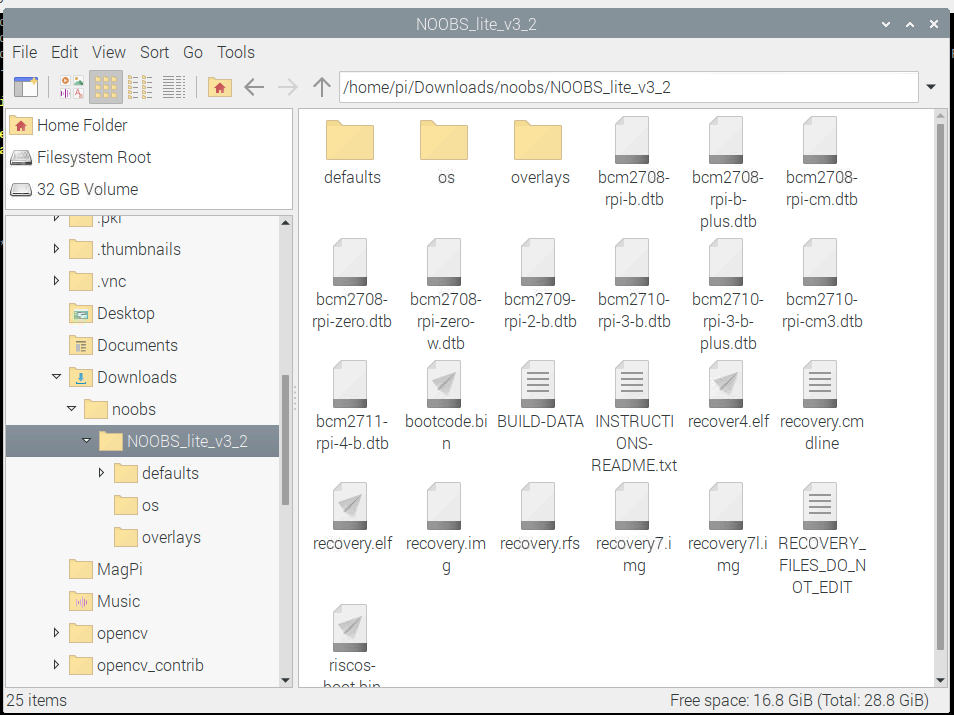

With this script, it's easier than ever to setup a MicroSD card with another Raspberry Pi. Make sure you have these, though:
Here's a shell preview:
pi@pi4:~ $
Note: I adjusted the CSS, and as long as you're using a modern browser, you'll won't copy the shell part.
Just select, copy, paste, and and run that command in your shell. When it's done, it'll say something like
"dd: error writing '/dev/sda': No space left on device"
Here's a shell preview:
pi@pi4:~ $
Note: I adjusted the CSS, and as long as you're using a modern browser, you'll won't copy the shell part.
You can download a version where you can install offline once NOOBS is on, or you can download a version where you need internet to install an OS with NOOBS. You can use these links, which will always be the latest version, or you can go to the choosing page and choose for yourself.
Once you've got the ZIP file, open it in the default compressed file manager, XArchiver. Click this button: 
It should pop open a box. All of the settings are fine, except one: The output file path. Click on the browse button, and make a folder called NOOBS. Select that folder for the output file path.
Then click "Extract", and it'll extract NOOBS! Once the "light" stops flashing red and green, it's done. Now time for the fun part!
Close XArchiver, and open the file manager. Find the NOOBS folder you made, and open it. If there's just one folder in there still, keep opening the folders until you see something like this: 
To get NOOBS onto the MicroSD, press Control+A to select all the files. Then, press Control+C to copy them. We're ready to put NOOBS on the card! Now, go to "/media/pi" in the file explorer.
There should be some folders, or maybe just one. Each folder represents some media. In order to know which one is yours, eject and unplug any other flash drives or other MicroSD cards, and refresh your folder with the F5 key. (Don't press the Function key while you press the F5 key!)
Now, open the folder that looks something like E14A-CF69, or some other string of numbers and letters. You're almost done installing NOOBS!
And press Control+V to put the files on! Once the progress bar is done, eject the MicroSD and put it in your new Pi!
pi@pi4:~ $
sudo apt-get update; sudo apt-get upgrade -y; sudo apt-get purge geany thonny -y; sudo apt-get install idle3 scite -y; sudo apt-get autoremove -y
This code updates, upgrades, removes geany and thonny, installs idle 3 and scite, and autoremoves leftover packages.